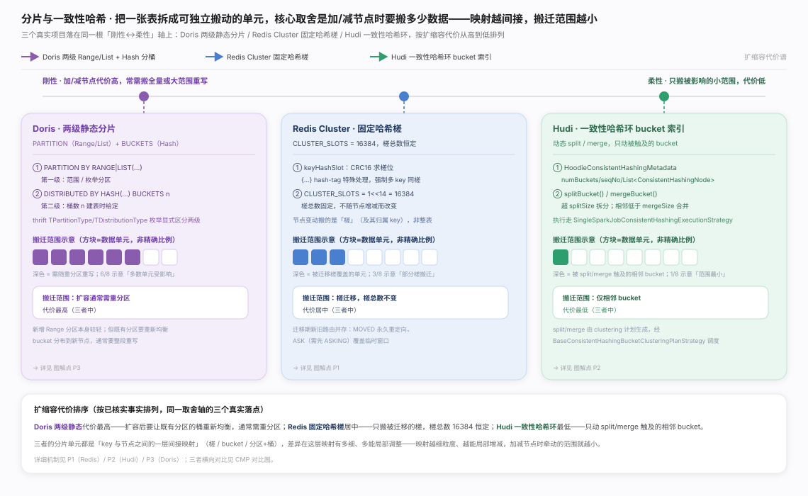
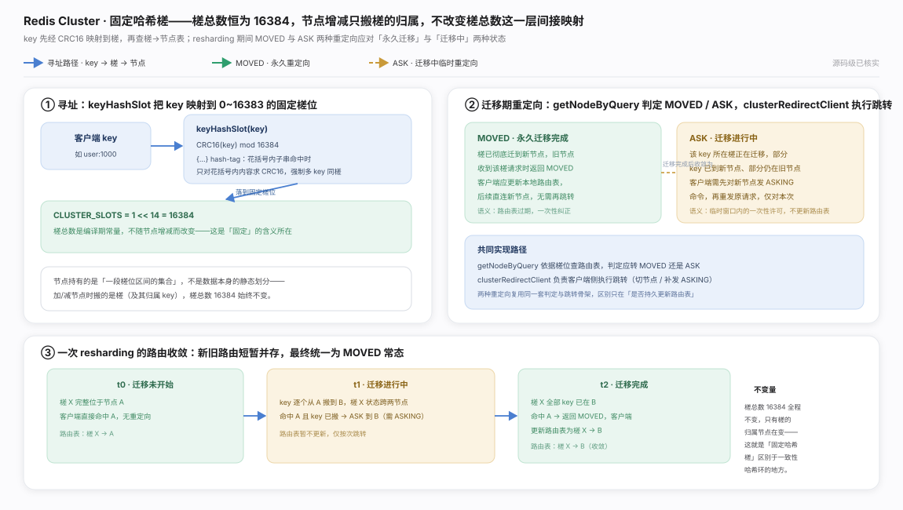
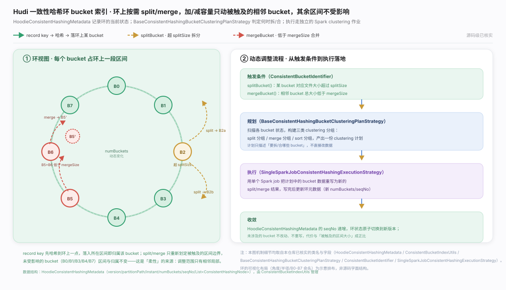
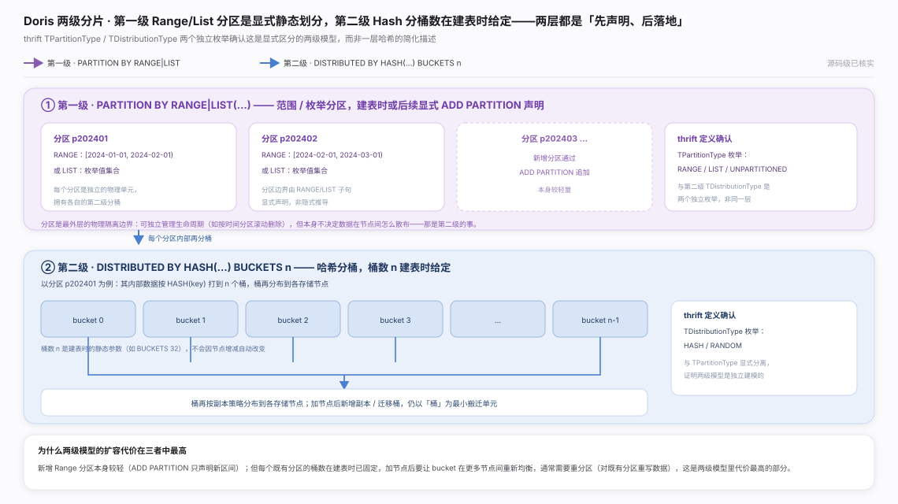
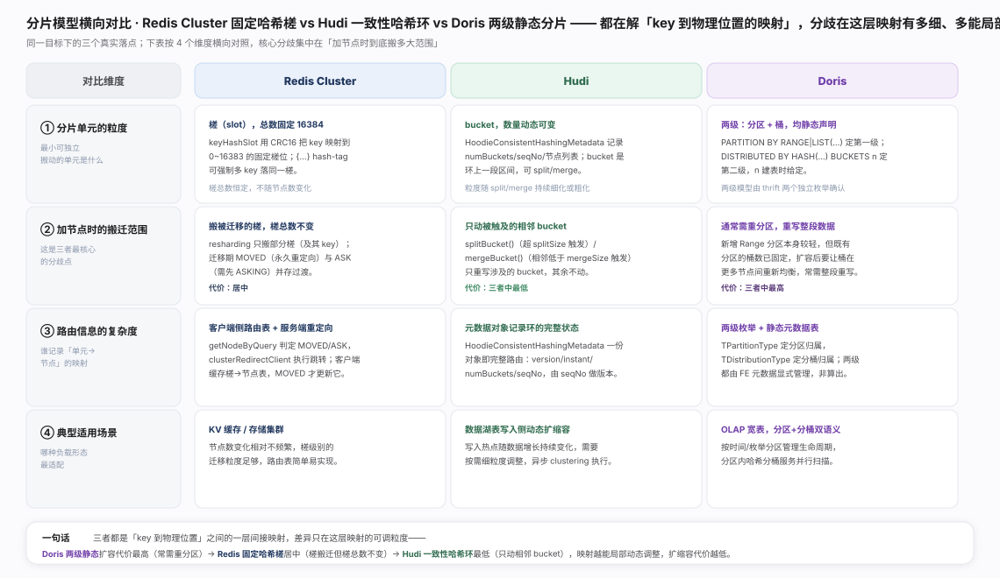

分片把一张表拆成可独立搬动的单元，取舍轴只有一条：加/减节点时要搬多少数据。三个真实项目落在"刚性↔柔性"谱系的三点——Redis Cluster 固定哈希槽、Hudi 一致性哈希环、Doris 两级静态分片，谱系与落点见生态图。

Redis Cluster · 固定哈希槽：key 经 CRC16 映射到 16384 个恒定槽位，扩缩容只搬槽的归属、不改槽总数；迁移期用 MOVED / ASK 两种重定向区分"已迁完"与"迁移中"，寻址与迁移收敛全过程见图。取舍：映射刚性、实现最简。

Hudi · 一致性哈希环：bucket 组织成环，超阈值 split、相邻不足 merge，只动被触及的相邻区间、其余归属不变，动态调整机制见图。取舍：搬迁范围最小，代价换来的是元数据与调度复杂度。

Doris · 两级静态分片：Range/List 分区 + Hash 分桶，桶数建表时固定，两级模型见图。取舍：查询裁剪友好，但既有分区加节点常需重分区、重写整段数据——三者中扩容代价最高。

三者本质是同一层"key→物理位置"间接映射的不同粒度，四维完整对照见图。一句话总纲：映射越能局部、动态调整，扩缩容代价越低——Hudi 最低、Redis 居中、Doris 最高。
Karger et al., *Consistent Hashing and Random Trees: Distributed Caching Protocols for Relieving Hot Spots on the World Wide Web*, STOC 1997
Apache Hudi 官方文档 · Table Management（一致性哈希桶索引的动态 split/merge 机制说明，见项目文档站 Table Management 章节；未附具体链接，因该路径深层锚点在核实时不稳定）